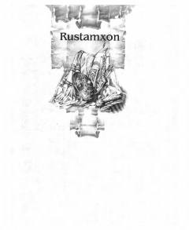

RDO'zbek xalqining mardlik va muhabbatni ulug'lovchi qahramonlik dostoni.
Ushbu asar o'zbek xalq dostonchiligining yorqin namunasi bo'lib, Fozil Yo'ldosh o'g'li tomonidan ijro etilgan variant asosida nashr etilgan. Doston vatanparvarlik, mardlik va yuksak insoniy fazilatlarni tarannum etuvchi qahramonlik epik asaridir.